TERMINAL TANKS DS
The artillery game, on two screens and a stylus.
Terminal Tanks DS is a homebrew port of the game for the Nintendo DS. The battlefield fills the top screen, while the touch screen holds the aiming pad, the menus, the shop and the Workshop. You can tap to fire, take on the Tournament and its bosses, open Terminal Tickets, face the Martyr, and play a friend DS to DS over local wireless, with no router.
It is a native DS program in an 832 KB ROM, not an emulator running the PC version, and its header marks it for both the DS and the DSi.
Version 1.5.0 port · one .nds file
WHAT IS IN THE PORT
BOTH SCREENS
The battlefield, HUD and wind live on the top screen. The bottom screen is a touch control panel: tap the arrows to aim and set power, and tap FIRE.
THE FULL CAMPAIGN
All 20 Tournament levels, 50 missions with UFOs and the Mothership, ten Terminal Ticket bosses, the Martyr's Time Machine and Martyr's Blessing.
DS-TO-DS WIRELESS
LAN play works over the DS's own local wireless: one DS hosts, the other joins, and the host's rules apply. You can change the wireless channel if it is busy.
YOUR OWN TANKS
The Workshop, profiles, the shop and its paints, cheat codes with an on-screen keyboard, the tutorial and the practice range all came along.
SAVES ON THE SD CARD
Progress is saved in /data/TerminalTanks/ on your SD card through DLDI. Hold L + R while it starts for a safe start that saves nothing.
SMALL
The entire game, every tank sprite, map and home screen included, fits in one 832 KB file.
SCREENSHOTS
Every picture below is the real ROM, captured in the NooDS emulator core with the two screens stacked as on the console.
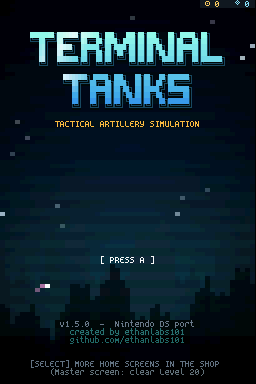
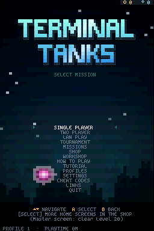
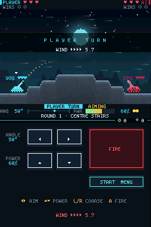
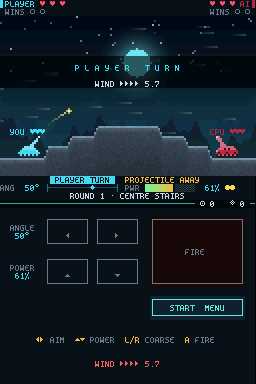
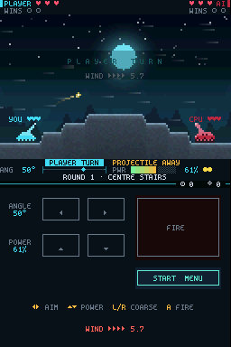
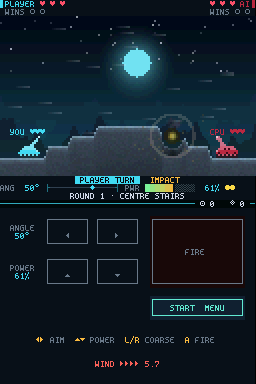
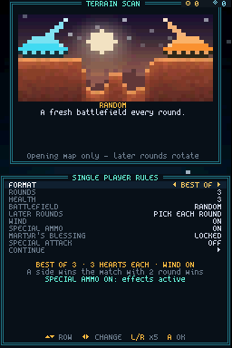
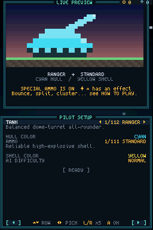
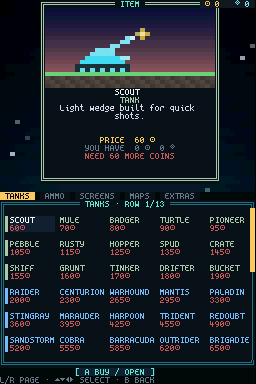
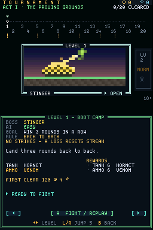
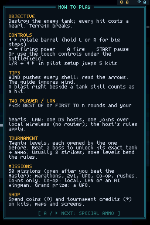
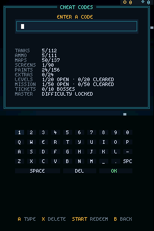
CONTROLS
| Button | In battle | In menus |
|---|---|---|
| ◀ ▶ | Rotate the barrel | Change a setting, pick a kit |
| ▲ ▼ | Firing power | Move between rows |
| L / R | Hold for big aiming steps | Jump five kits in pilot setup, turn shop pages |
| A | Fire | Select |
| B | Back | |
| START | Pause menu | |
| SELECT | Switch home screen on the title | |
| Stylus | Tap the aiming pad and FIRE under the battlefield | Tap rows and buttons |
WHERE THE DS VERSION STANDS
The DS port is version 1.5.0; the PC and browser game is at 1.6.0. The port intentionally trails the main game, so the newest additions have not reached it yet. These numbers come from each version's own cheat-code screen.
| DS 1.5.0 | PC and browser 1.6.0 | |
|---|---|---|
| Tanks | 112 | 122 |
| Ammo types | 111 | 121 |
| Maps | 137 | 147 |
| Home screens | 90 | 100 |
| Animated paints | RGB, Astral, Prismatic, Void | RGB plus 11 paints |
| Music | An optional beep on impacts | A full synthesized soundtrack of 277 songs and a jukebox |
| Two players | Same DS, or DS to DS over local wireless | Same keyboard, or LAN over a network (download only) |
Not in the DS port yet: the newest premium set (ten tanks such as Kitsune and Kaiju, their ten ammo types, ten battlefields from Mariana Deep to Ghost Reef and ten home screens from Biolume Trench to Ghost Armada), the eight newest paints (Molten, Chrome, Aurora, Circuit, Ocean, Synthwave, Toxic and Gilded) and the soundtrack. Saves from the PC or browser game do not load on the DS, which keeps its own save on the SD card.
HOW TO PLAY IT
ON A DS, DS LITE OR DSi
- You need a way to run homebrew: a DS flashcart, or a DSi or 3DS set up for homebrew (for example with TWiLight Menu++).
- Copy
terminaltanks-ds.ndsto the SD card, anywhere your loader can see it. - Start it from the loader's menu. It saves to
/data/TerminalTanks/on the same card.
Saving needs SD-card access through DLDI, which most flashcart loaders and TWiLight Menu++ provide automatically. Without it the game still runs and tells you on the boot screen that progress will not be saved.
IN AN EMULATOR
- Open the .nds file in a DS emulator that runs homebrew, such as melonDS, DeSmuME or NooDS.
- No BIOS or firmware files are needed to start it in NooDS, which booted it for the pictures on this page.
- To keep progress, turn on the emulator's DLDI or SD-card option if it has one.
Tested here: NooDS (core), which boots the game, plays matches and accepts touch input. Other emulators and hardware have not been tested for this page; please report what works on GitHub.
RELEASE
Check the download with sha256sum terminaltanks-ds.nds (Linux), shasum -a 256 terminaltanks-ds.nds (macOS) or certutil -hashfile terminaltanks-ds.nds SHA256 (Windows). Terminal Tanks DS is fan-made homebrew; it is not affiliated with or endorsed by Nintendo.